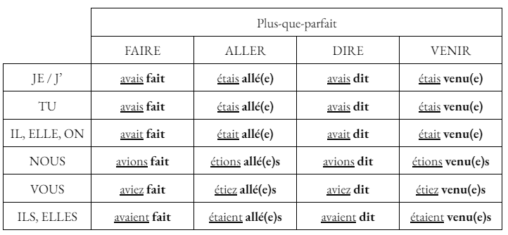
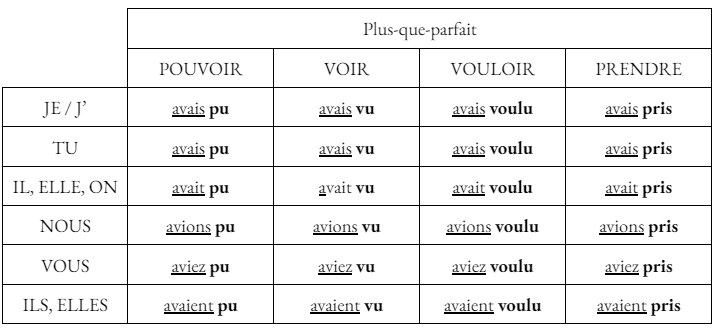
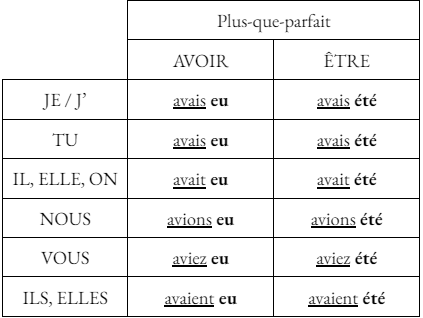

Le Plus-que-parfait
Utilisation
Le plus-que-parfait est un temps composé du passé. Il exprime une action antérieure à une action passée.
Construction
La plus-que-parfait se construit avec les auxiliaires être ou avoir conjugués à l'imparfait, suivis du participe passé du verbe conjugué.
Avec l'auxiliaire "être", le participe passé s'accorde toujours en genre et en nombre avec le sujet.
Avec l'auxiliaire "avoir", le participe passé ne s'accorde jamais en genre et en nombre avec le sujet.
Remarque : avec l'auxiliaire "avoir", le participe passé s'accorde avec le COD si et seulement si celui-ci est placé avant le verbe.
Formation du participe passé
Si le verbe appartient au 1er groupe, le participe passé se terminera par -é / -és / -ée / -ées.
Si le verbe appartient au 2ème groupe, le participe passé se terminera par -i / -is / -ie / -ies.
Si le verbe appartient au 3ème groupe, le participe passé pourra se terminer par :
- -u / -us / -ue / -ues.
- -i / -is / -ie / -ies
- -é / -és / -ée / -ées
- -it / -its / -ite / -ites
Conjugaison des verbes faire, aller, dire, venir, pouvoir, voir, vouloir et prendre
 
Auxiliaires
Voici la conjugaison des auxiliaires avoir et être au plus-que-parfait de l'indicatif.

Maintenant que tu as bien compris les points de leçons, clique ici pour t'entraîner avec des verbes et des pronoms aléatoires : Exercice d'entraînement du plus-que-parfait